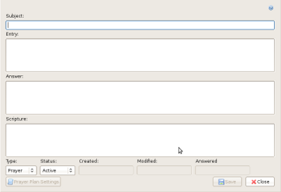

With the Compose dialog, you can write
your journal entry. The first thing you will start with is the subject.
This is used to indicate what the entry is about; much like in an email
message.
Next, you can supply the entry text, or body, which will make up the
majority of the entry.
For Prayer type entries, you have the option of writing an answer to
the prayer. The answer textbox only appears when the Type is set to
prayer.
The Type drop-down list allows you to specify what type of journal
entry you are writing.
The Status drop-down list allows you to specify the status of the
entry; whether it is Active, Answered or Inactive.
Once you have saved your entry, you will have the option to set its
Prayer Plan Settings.